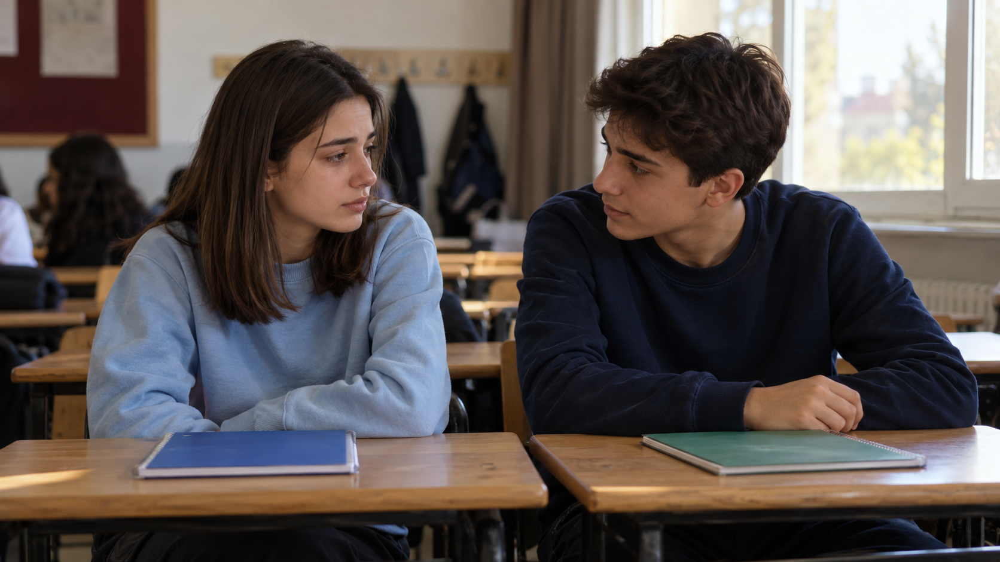
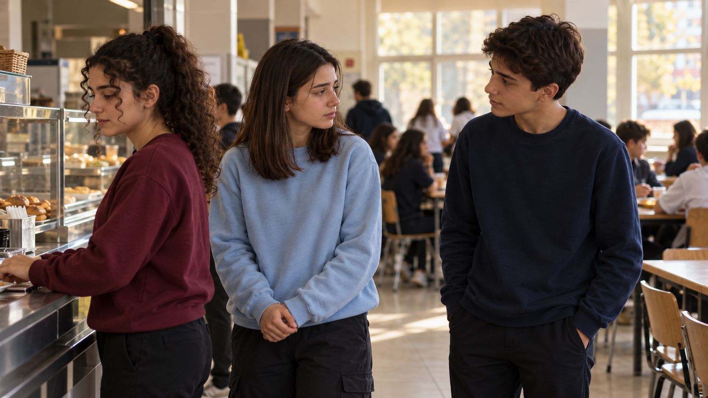
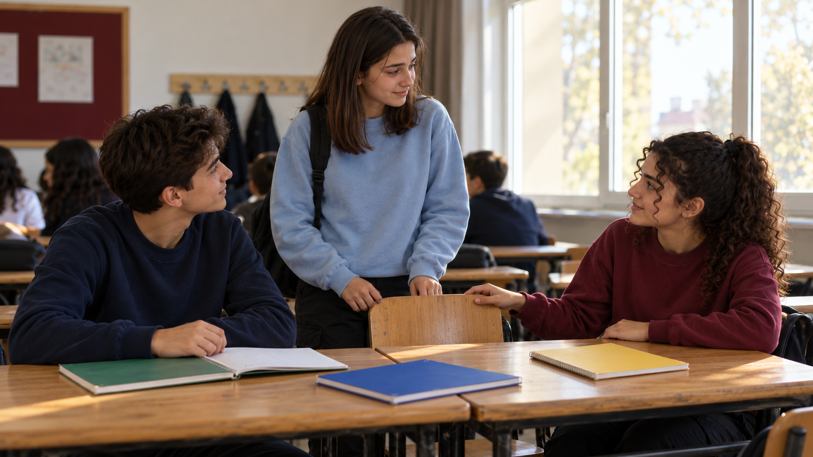

YANINDA OLMAK01 /
Umut
Dinler, destek olur. Arkadaşının kendini yalnız hissetmemesi için yanında durur.
DuyarlılıkBİR OKUL GÜNÜNDEN DAHA FAZLASI
Birbirini dinleyen, birbirine yer açan üç arkadaş.
Umut, Derya ve Nida’nın hikâyesine hoş geldin.
Her şey bir arkadaşını
fark etmekle başlar.

YANINDA OLMAKDinler, destek olur. Arkadaşının kendini yalnız hissetmemesi için yanında durur.
DuyarlılıkDuygularını paylaşır, başkalarının hakkını gözetir. Küçük bir yardımla iyiliği büyütür.
Saygı
YER AÇMAKBir gülümseme ve boş bir sandalyeyle arkadaşına “Senin de burada yerin var” der.
KapsayıcılıkÜç arkadaş. Dört sahne. Birlikte yaşamanın incelikleri.
Hikâyeyi keşfet02 / HİKÂYEMİZ
Nezaket yalnızca bir söz değil; her gün yaptığımız bir seçim.

Bir söz incitebilir, küçük bir iyilik ise bir arkadaşımıza yalnız olmadığını hissettirebilir.
Derya, sınıfta kendisiyle yeniden alay edildiğini Umut’a anlatır. Umut onu dinler ve öğretmenleriyle birlikte konuşmayı önerir. Derya, yaşadıklarıyla tek başına kalmadığını hisseder.
Teneffüste kantine giderler. Umut sırada bekleyen Derya’nın yanına yaklaşınca Derya, herkesin sırasına saygı göstermelerini hatırlatır. Umut özür dileyerek sıranın sonuna geçer.
Sınıfa dönerken Nida’nın sarı defteri yere düşer. Derya defteri alıp ona uzatır. Biraz sonra Nida da sınıfta Derya’ya yer açar. Üç arkadaş aynı masada buluşur.
Dinlemek, hakkını gözetmek, yardım etmek ve kimseyi dışlamamak… Akran nezaketi böyle görünür olur.
Hikâyeyi sahne sahne gör03 / SAHNE SAHNE
Bir an dur. Bak. Hisset.
Her sahnede bir arkadaşlık izi var.
Klavyenin sağ ve sol oklarıyla da sahneler arasında gezinebilirsin.
Şimdi filmi izle04 / KISA FİLM
Umut, Derya ve Nida’nın okul gününden dört küçük an.